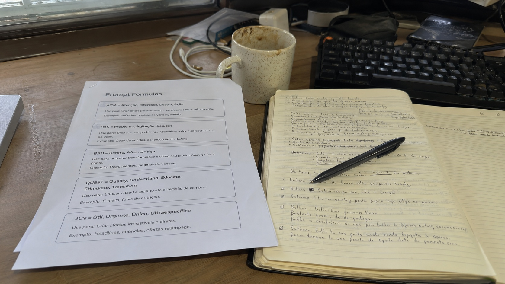

← BACK TO DOSSIERS LIST
REALISM CASE FILE // TREND: MASTER PROMPT TEMPLATE FOR DAILY REALISTIC CONTENT CREATION
Photo-Realism Calibration for Workspace Photography: Turning Prompt Sheets into Camera-Grade Documentary Images
DATE: 2026-07-05
STATUS: CALIBRATED_REALISM
ENGINE: CHATGPT DALL-E 3

SPECIMEN IMAGE #16:9 - CLEAN OPTICS
Artificial intelligence can produce convincing workspace imagery within seconds, yet many generated scenes still repeat the same polished visual language: spotless desks, perfectly aligned stationery, flawless lighting, and unrealistic material consistency. A believable workspace photograph is defined far more by ordinary physical behavior than by added detail, making documentary observation more valuable than visual perfection.
In the sections above we broke the scene into subject, environment, physics, time, and camera because each layer contributes independent evidence of realism. However, the physical description alone is not the complete solution. The larger improvement comes from subtle language-level substitutions that quietly alter how an image model interprets reality, and those shifts become visible inside the calibration console represented by the lexicon transition table at the end of this dossier.
Lexicon shifts replace aesthetic shortcuts with measurable photographic observations. Instead of requesting cinematic lighting, the calibration specifies mixed practical illumination. Instead of demanding ultra sharp detail, it describes localized focus behavior, compression limits, and consumer sensor characteristics. These changes reduce synthetic visual patterns while increasing consistency across geometry, optics, texture retention, aging, and environmental behavior, producing prompts that resemble documentary photography rather than digitally optimized illustrations.
The same principle that exposes repetitive AI aesthetics also provides a repeatable framework for overcoming them. If you want a deeper calibration methodology, extended film-style prompt analysis, and practical camera-grade reconstruction techniques, explore ALPHA REALISM. The complete methodology expands these calibration layers, reality metrics, and lexicon transformations into a structured workflow designed for creators pursuing documentary-level image generation through ALPHA REALISM.
The 5 Layers of Reality Applied
Subject:
A documentary-style workspace photographed from a seated position, showing a printed sheet filled with prompt formulas beside an open notebook with handwritten notes. A black pen rests diagonally across the notebook, while a mechanical keyboard, a ceramic coffee mug with faint staining, and a loosely coiled charging cable remain partially visible. The printed paper shows slightly curled corners, minor toner density variation, and subtle handling marks rather than perfectly flat presentation.
Environment:
Available daylight enters from a nearby window, producing uneven illumination with gradual shadow falloff across the desk. Interior ambient light mixes with natural light, creating slight color temperature variation. Small dust particles, light surface scratches, fingerprint smudges, and ordinary workspace clutter remain visible without staged organization.
Physics:
Gravity causes natural paper curling, notebook pages to settle unevenly, and the pen to cast a soft directional shadow. Reflections remain weak and diffuse across the desk surface. Slight compression of notebook pages beneath the pen, subtle paper deformation, and realistic object contact points reinforce physical plausibility without exaggerated effects.
Time:
The workspace exhibits ordinary daily use through worn notebook edges, faint coffee ring residue, minor graphite smears, light paper creases, accumulated dust in keyboard gaps, gentle discoloration around frequently handled paper edges, and small scratches across the desk finish that suggest repeated use over time.
Camera:
Simulated handheld smartphone capture using an approximately 26 mm equivalent lens, f/1.8, ISO 320, 1/80 s. Moderate computational HDR with slight highlight clipping near the window, mild edge softness, subtle JPEG compression, faint sensor noise in darker regions, imperfect autofocus priority, restrained sharpening halos, and realistic tonal flattening typical of consumer mobile cameras.
The Lexicon Shift Table
| Appearance (Dead Adjective) |
|
Living Event (Cause & Effect) |
| perfect workspace |
➔ |
lived-in desk with ordinary object placement and small signs of daily use |
| cinematic lighting |
➔ |
available window light mixed with practical indoor illumination |
| ultra sharp details |
➔ |
localized focus with mild edge softness and realistic optical falloff |
| spotless paper |
➔ |
printed sheet showing slight curling, handling marks and minor toner variation |
| professional composition |
➔ |
naturally balanced desk arrangement with subtle framing imperfections |
| hyper realistic textures |
➔ |
ordinary material wear with restrained sensor detail retention |
| studio quality image |
➔ |
handheld smartphone photograph with computational HDR artifacts and light compression |
| perfect notebook |
➔ |
used notebook containing uneven handwritten notes, softened page edges and realistic paper fatigue |
Calibration Prompt Console
5-Layer Camera-Grade Documentary Realism. Subject: A naturally photographed workspace featuring a printed sheet containing prompt formulas placed beside an open notebook filled with handwritten notes, accompanied by a black pen, partial mechanical keyboard, ceramic coffee mug with light staining, loosely coiled charging cable and ordinary desk accessories, preserving authentic object placement without staged symmetry. Environment: Available daylight entering through a nearby window mixes with practical indoor illumination, producing uneven exposure, soft ambient shadows, realistic highlight clipping, light dust, fingerprint smudges, desk scratches, visual clutter and believable workspace entropy. Physics: Gravity-driven paper curl, notebook compression beneath the pen, diffuse reflections, subtle page deformation, realistic contact shadows and physically plausible material interaction without exaggerated effects. Time: Light wear on notebook corners, faint coffee residue, toner inconsistency, dust accumulation, paper creases, softened desk finish and gradual aging consistent with regular daily work. Camera: Handheld consumer smartphone, 26 mm equivalent lens, f/1.8, ISO 320, 1/80 s, computational HDR, mild edge softness, restrained sharpening halos, slight JPEG compression, subtle sensor noise, imperfect autofocus acquisition, moderate tonal flattening, documentary photographic behavior, aspect ratio --ar 16:9
Do you want to generate precise AI images?
Unlock our alpha realism blueprint, physical reliable framework to get the best of your creations with the ALPHA REALISM Guide.
Download Ebook Now